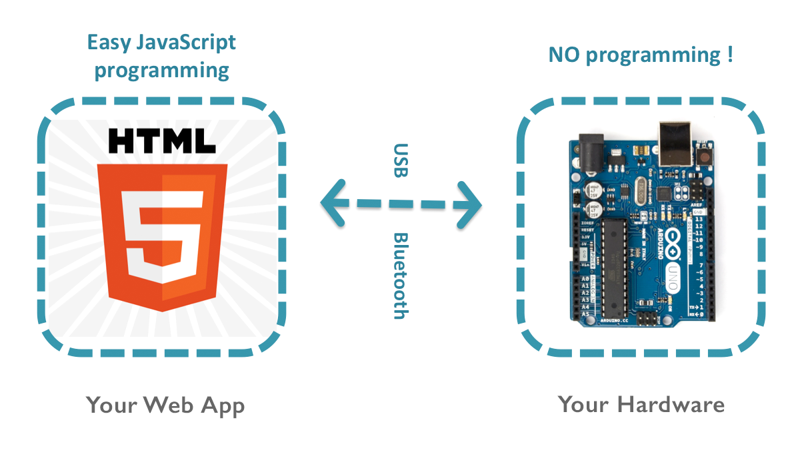

h5control provides an easy way to enable your web app to control your own hardware with digital/analog IO, motors, servos, LED lights, sensors and other electronic gadgets. Now, let's play with h5control step by step.

Need an Arduino MEGA or UNO board.
Download rioc-arduino sketch, open sketch RiocArduino.ino in Arduino IDE and upload the program to the Arduino.
In order to be able to remote reset Arduino, also must use a wire to connect pin 12 to the RESET pin on the Arduino board.
Mac:
Download h5control Service for macOS,
copy app "h5control Service" to your Applications folder and run it.
Windows:
Download h5control Service for windows,
copy folder "h5control Service" to your disk and run "h5connect.exe" or "h5connect-console.exe" in the folder.
Now, connect your h5control-ready Arduino to your computer USB port, and test in web , where you can also assign an unit ID to your Arduino .
h5control Basics
1.1 Getting Started with h5control
1.2 Playing with Web Inspector
General IO Controls
2.1 Digital Out
2.2 Digital In
2.3 Analog Out
2.4 Analog In
2.5 UART Serial
Motion Controls
3.1 Motor
3.2 Stepper
3.3 Rudder Servo
Sensors
4.1 Encoder
4.2 Ultrasonic Ranger
4.3 Thermometer
Sound and Lights
5.1 Tone Player
5.2 LED Strip
Infrared Communication
6.1 IR Receiver
6.2 IR Transmitter
System Programming
7.1 System Objects
7.2 Raw Message
For more information about the developer and all source code of h5control, please visit
robinz.org and
github/robinz-labs .